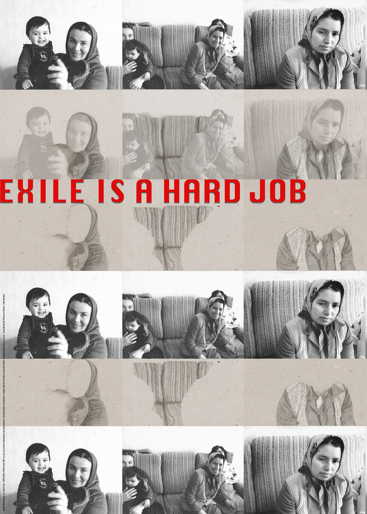

#87 Nil Yalter
artisti
3500 cm²
luoghi
mostre
news
partner
contatti

#87 Nil Yalter,
Exile Is a Hard Job
, 1976–2024, 3500 cm² #87
Expodemic, Festival delle Accademie e degli Istituti di Cultura stranieri 2024 — Palazzo Esposizioni Roma – Académie de France à Rome – Villa Médicis
←
→